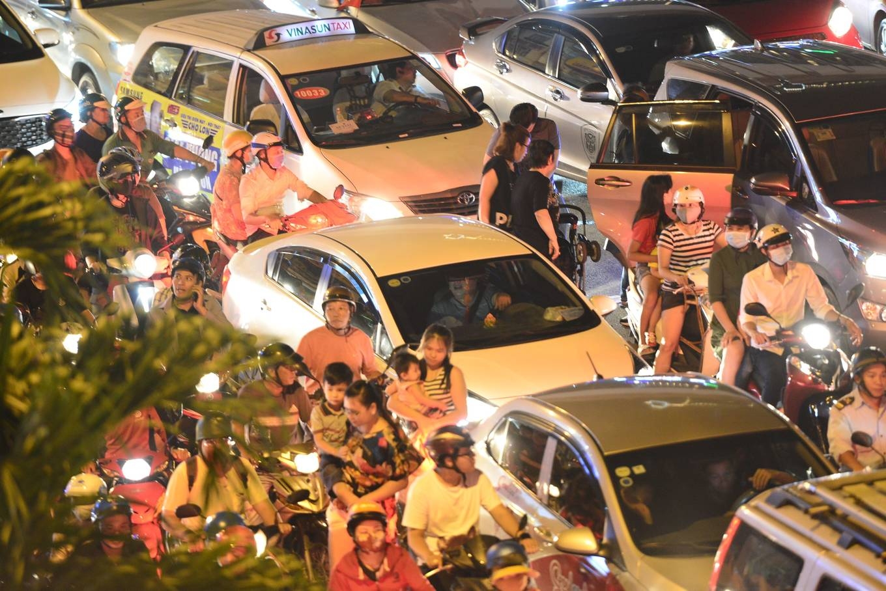
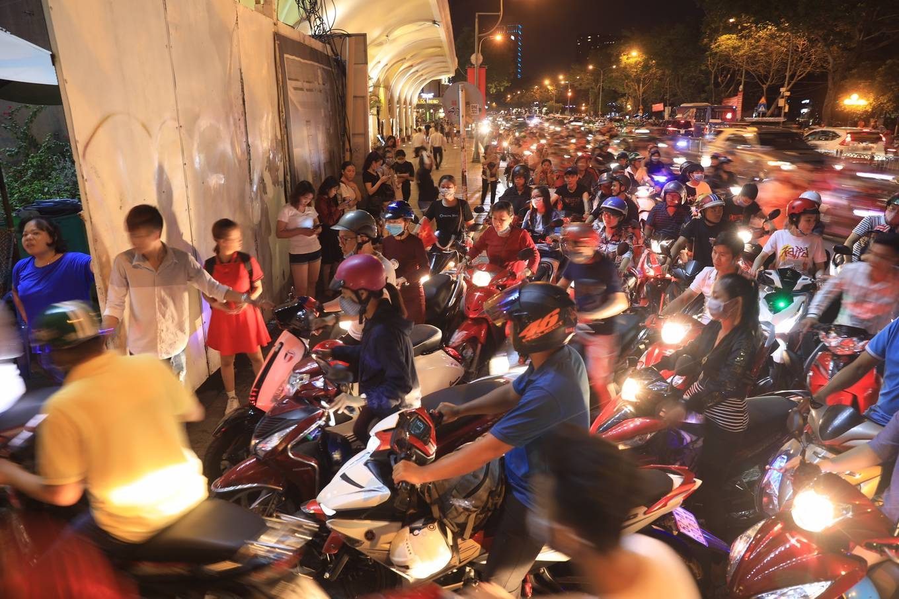
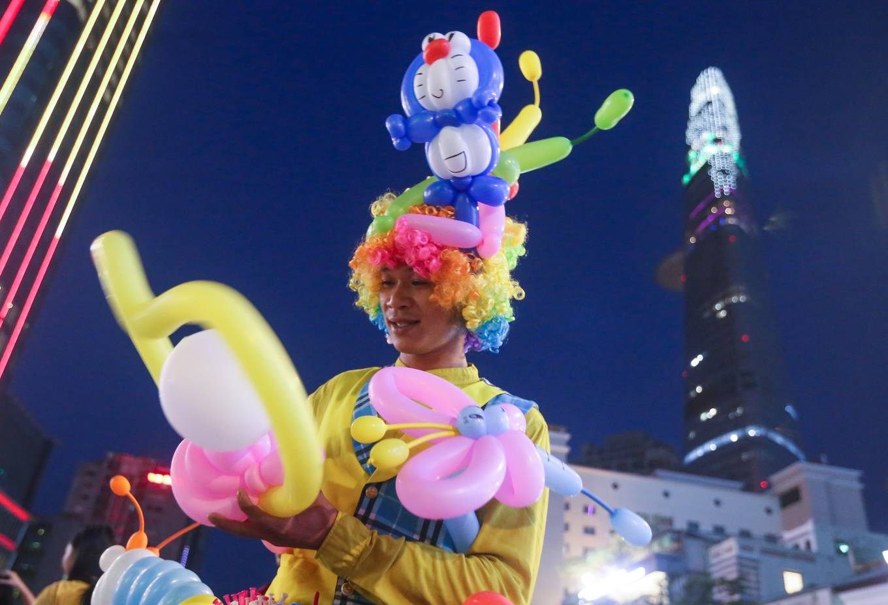
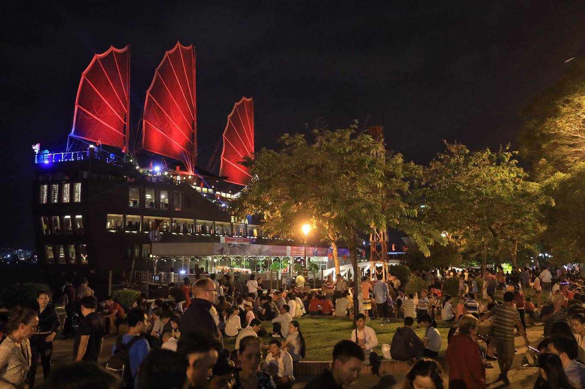
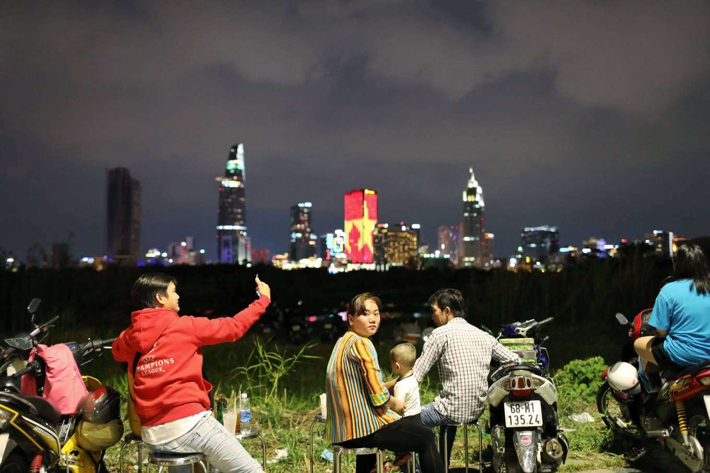
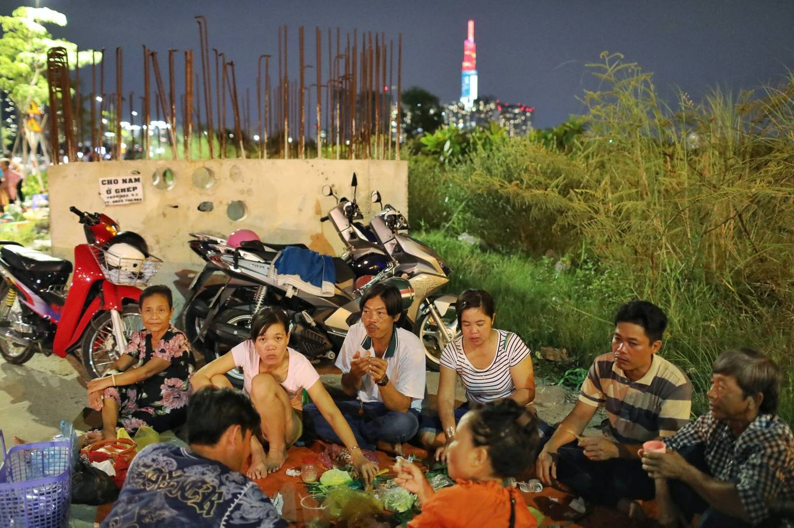

Kỷ niệm 44 năm thống nhất đất nước, TP HCM tổ chức bắn pháo hoa tại Hầm Thủ Thiêm (quận 2); toà nhà 81 tầng Landmark (quận Bình Thạnh) và Công viên Đầm Sen (quận 11).
19h, các tuyến đường Điện Biên Phủ, Nguyễn Hữu Cảnh... hướng về trung tâm thành phố chật ních xe.
Đây là lần thứ hai tòa nhà cao nhất Việt Nam được chọn là nơi bắn pháo hoa - trở thành điểm vui chơi mới trong dịp lễ, Tết của người Sài Gòn.
Ùn ứ nghiêm trọng khiến nhiều người phải bỏ taxi, xe grab... đi bộ cả cây số để vào công viên tòa nhà này.
Hàng nghìn người nhích từng chút một chờ vào gửi xe máy để ra phố đi bộ Nguyễn Huệ (quận 1) vui chơi.
"Lần nào bắn pháo hoa cũng mệt nhoài chuyện kiếm chỗ để xe. Dịp này bắn pháo bông sớm nên vừa ăn tối xong thì cả nhà tôi xuống phố đi bộ sớm", anh Tuấn ở quận 3, nói.

Như thường lệ, phố đi bộ Nguyễn Huệ vẫn là nơi đông nhất trung tâm Sài Gòn vào các dịp lễ, Tết. "Ở đây gia đình tôi vừa có thể dạo mát, không vướng xe cộ, chút nữa cũng dễ dàng xem pháo hoa bên bờ sông Sài Gòn", chị Nguyễn Vân Anh đi cùng chồng con, cho biết.
Anh hề Trần Quý (27 tuổi) tạo hình bong bóng bán trên phố đi bộ. "Nghề chính của tôi là thi công bảng quảng cáo. Dịp lễ mới ra đây kiếm thêm thu nhập, nếu ít cũng được gần nửa triệu đồng một tối", anh Quý nói.
Công viên Bạch Đằng (bờ sông Sài Gòn) ở đầu phố đi bộ cũng là điểm lý tưởng để xem pháo hoa được bắn từ phía bờ bên kia - Hầm Thủ Thiêm.
Từ rất sớm người dân đã đến chọn cho mình vị trí đẹp. Tuyến đường Tôn Đức Thắng ngay cạnh công viên đã bị cấm xe từ 20h để phục vụ nhu cầu vui chơi, giải trí của người dân

Dù được cảnh báo nhưng nhiều người bất chấp nguy hiểm, ngồi hẳn ra bờ kè sông Sài Gòn để chờ xem pháo hoa. "Ở vị trí này vừa có thể xem pháo hoa từ tòa nhà cao nhất Việt Nam, vừa xem được ở Hầm Thủ Thiêm", nam sinh Hữu nói.
Mai (23 tuổi, người Nhật) lần đầu đến Việt Nam du lịch. "Tôi rất hào hứng được xem màn bắn pháo hoa ở Sài Gòn, giống như các bạn vậy", cô nói
Tại khu vực sông Sài Gòn bên quận 2, các vị trí hướng về trung tâm thành phố đều có người ngồi chờ màn bắn pháo hoa.
Nhiều gia đình mang theo thức ăn, ghế, bạt... vừa ăn tối vừa trò chuyện rôm rả chờ xem pháo hoa
Để đảm bảo an toàn cho việc bắn pháo hoa, từ 19h đến 21h30, các loại xe không được đi vào đường Nguyễn Huệ (đoạn từ Lê Thánh Tôn đến Tôn Đức Thắng, quận 1), khu vực này chỉ phục vụ người đi bộ xem pháo hoa.
Từ 20h30 đến 21h30, tất cả xe không được đi vào các tuyến đường: Nguyễn Tất Thành (đoạn từ Hoàng Diệu đến cầu Khánh Hội, quận 4); Tôn Đức Thắng (đoạn từ Công trường Mê Linh đến cầu Khánh Hội quận 1); Đồng Khởi (đoạn từ Ngô Đức Kế đến Tôn Đức Thắng); Hải Triều (đoạn từ Hồ Tùng Mậu đến Nguyễn Huệ); Hàm Nghi (đoạn từ Hồ Tùng Mậu đến đường Tôn Đức Thắng).
Phạm Lý Thanh Hiếu
Đào Minh
Đức